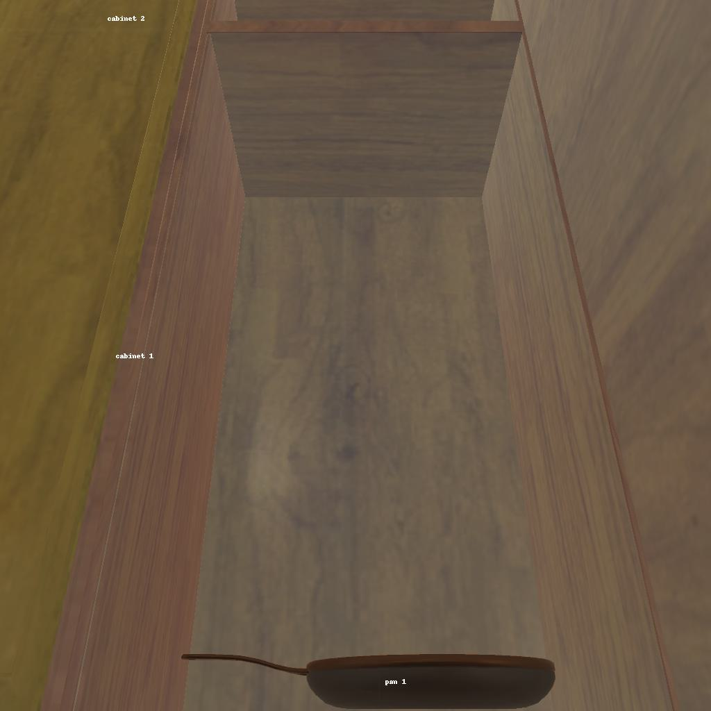

---------------------------------------------------------task: 17---------------------------------------------------------
--------------------------------------------------------------------------------------------------------------------------------------------------------------------
--------------------------------------------------------------------------------------------------------------------------------------------------------------------
Step:--------------------------------------------------------------------------8-------------------------------------------------------------------------------
----------------------------------------
VLM Prompt:
Image1:
**Instruction**
1. Analyze the provided image to identify all visible household objects, focusing on those relevant to the task description "cool some pan and put it in stoveburner."
2. Use the analysis of the image and the task hint "The agent must find an object of the desired type, pick it up, go to a fridge, cool the object with the fridge, then find the correct location to place it, and put it down there. The agent does not need to use the fridge button or open the fridge to cool the object, and the agent just needs to do action that is "cool the object with the fridge"." to answer the question: what is the most reasonable action in the choices for the task description "cool some pan and put it in stoveburner"?
4. Decide and write the answer using the template: The answer is: (i): , where i is the real number. If there is no desired object in the image, search every place based on **Initial Observation** to find the object. And if no one is exactly correct, choose a similar answer.
**Initial Observation**
You are in the middle of a room. Looking quickly around you, you can see cabinet (1-14), countertop (1-2), microwave (1), drawer (1-5), sink (1), sinkbasin (1), coffeemachine (1), stoveburner (1-4), toaster (1), fridge (1), diningtable (1), garbagecan (1), safe (1)
**Answer Choices**
(1): go to cabinet 3
(2): go to countertop 1
(3): go to cabinet 4
(4): go to cabinet 5
(5): go to microwave 1
(6): go to cabinet 6
(7): go to drawer 1
(8): go to drawer 2
(9): go to drawer 3
(10): go to cabinet 7
(11): go to cabinet 8
(12): go to sink 1
(13): go to sinkbasin 1
(14): go to coffeemachine 1
(15): go to cabinet 9
(16): go to cabinet 10
(17): go to drawer 4
(18): go to cabinet 11
(19): go to stoveburner 1
(20): go to stoveburner 2
(21): go to stoveburner 3
(22): go to stoveburner 4
(23): go to cabinet 12
(24): go to toaster 1
(25): go to drawer 5
(26): go to countertop 2
(27): go to fridge 1
(28): go to cabinet 13
(29): go to cabinet 14
(30): go to diningtable 1
(31): go to garbagecan 1
(32): go to safe 1
(33): close cabinet 2
(34): take pan 1 from cabinet 2
(35): examine cabinet 2
**Answer**
Let's think step by step by following the instructions.
----------------------------------------
----------------------------------------
Original Response:
The task is to cool a pan and then put it in a stoveburner. From the initial observation, we know that there is a fridge in the room which can be used to cool the pan. The image shows a pan (pan 1) inside cabinet 2, which is relevant to the task.
Given that the agent does not need to use the fridge button or open the fridge to cool the object, the most reasonable action is to first take the pan from cabinet 2 and then go to the fridge to cool it. After cooling the pan, the agent will need to go to a stoveburner to place it there.
Analyzing the answer choices, the action that allows the agent to take the pan is:
(34): take pan 1 from cabinet 2
Then, the action to go to the fridge to cool the pan is:
(27): go to fridge 1
And finally, the action to put the cooled pan in a stoveburner is one of the stoveburner options:
(19): go to stoveburner 1
(20): go to stoveburner 2
(21): go to stoveburner 3
(22): go to stoveburner 4
Since the specific stoveburner is not mentioned in the task, we can select any of them. For this example, we will choose stoveburner 1.
Therefore, the sequence of actions would be: take the pan, cool it with the fridge, and place it in a stoveburner.
The answer is: (34): take pan 1 from cabinet 2, then (27): go to fridge 1, and then (19): go to stoveburner 1.
----------------------------------------
----------------------------------------
>>> Refine Original VLM Response and Get Pure Action: take pan 1 from cabinet 2, then (27): go to fridge 1, and then (19): go to stoveburner 1
----------------------------------------
-----------------------------------------------------------------
Running time: 16.380664110183716 seconds
Total Money: 5.842320000000003
-----------------------------------------------------------------
-----------------------------------------------------------------
Text Observation:Nothing happens.
-----------------------------------------------------------------
UNSUCCEED